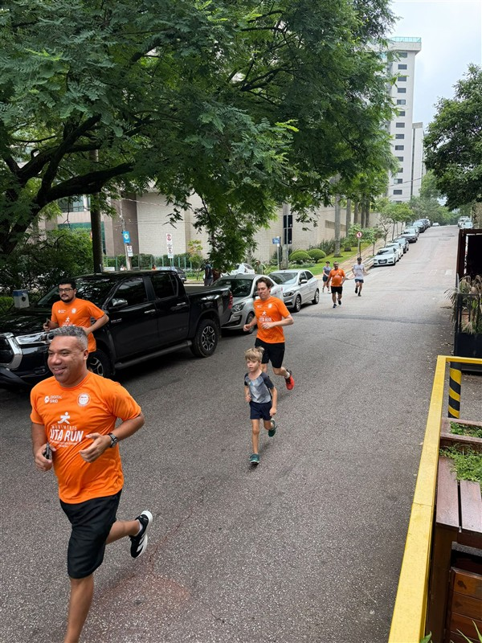
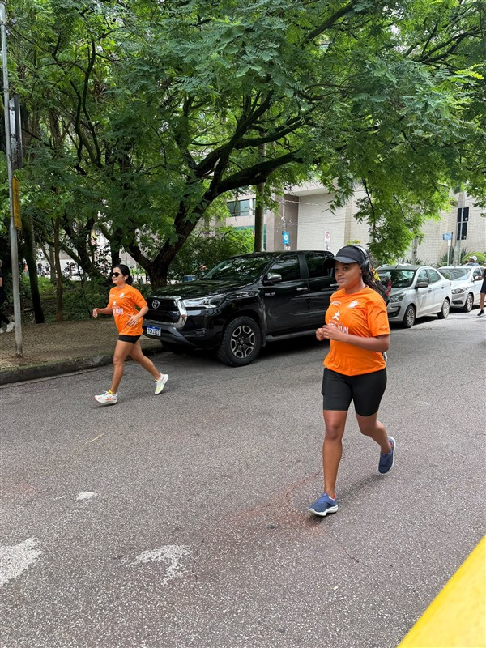
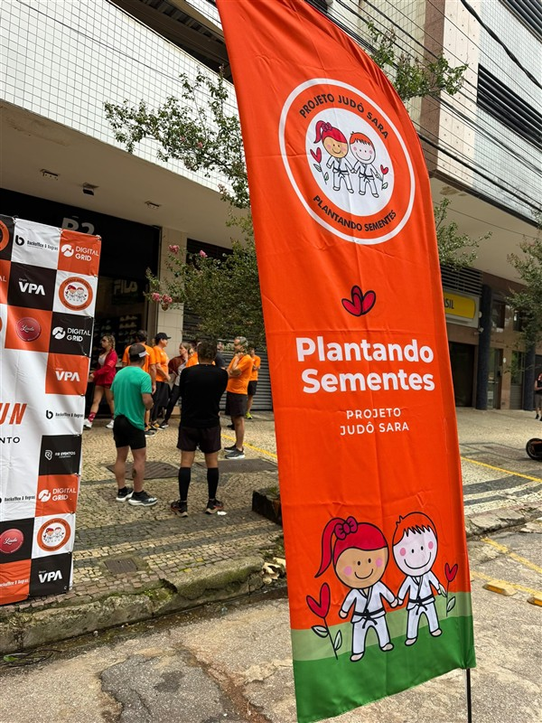
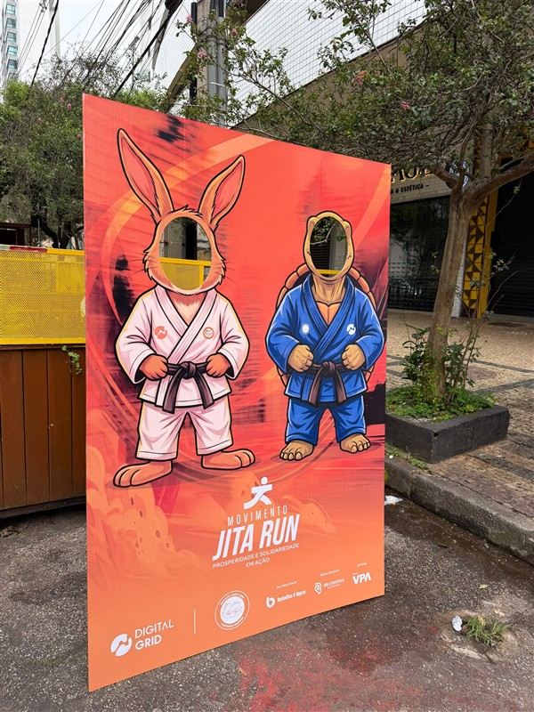
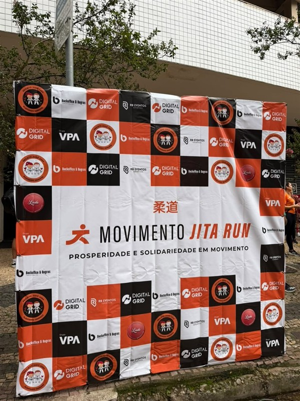
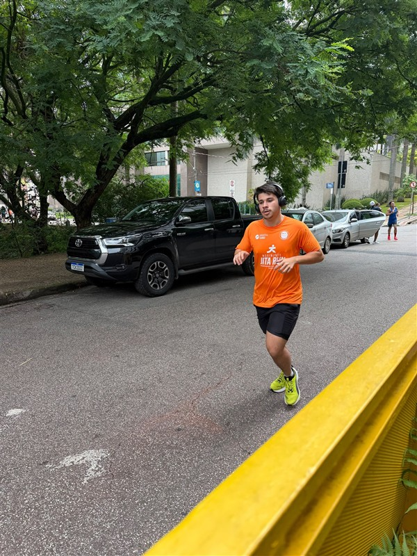

Realizado em 2026
Belvedere · Belo Horizonte
Corrida e caminhada solidária
Encontre e adquira as suas
Jita Kyoei · 自他共栄
QUANDO UM
QUANDO UM
AVANÇA, TODOS
PROSPERAM.
Jita significa prosperidade e benefício mútuos: evoluir individualmente enquanto se contribui para o bem-estar de toda a comunidade.
É esse princípio do judô que encontra a corrida no Movimento Jita Run. Um encontro participativo, pensado para diferentes ritmos e unido pelo apoio ao Instituto Projeto Judô Sara.
Saúde, esporte e solidariedade: um propósito que continua depois da linha de chegada.
Assim foi o nosso encontro
MOMENTOS QUE
MOMENTOS QUE
FICAM COM A GENTE.
Entre uma passada e outra, o que fica é a alegria de fazer parte. Toque nas fotos para ampliar.
Ampliar foto

Ampliar foto
Ampliar foto
Ampliar foto
Ampliar foto
Ampliar foto
Ampliar fotoProcurando sua foto? Acesse o álbum de fotos oficiais.
600+crianças e adolescentes
Impacto social
CADA PASSADA
CADA PASSADA
PLANTA UMA SEMENTE.
O Instituto Projeto Judô Sara acolhe mensalmente crianças e adolescentes em situação de vulnerabilidade em Belo Horizonte, promovendo formação cidadã e inclusão social por meio do judô e do esporte.
Memórias do Jita Run
SEU MOVIMENTO.
SEU MOVIMENTO.
SUAS MEMÓRIAS.
A emoção desse encontro merece ficar com você.
Acesse o álbum oficial do Jita Run na FotosBy para encontrar e adquirir suas fotos da corrida e caminhada.
Ver e adquirir fotos oficiaisOBRIGADO POR
SE MOVER COM A GENTE.
Cada presença fez parte desta história. Guarde as lembranças do Jita Run e continue acompanhando os próximos encontros da RB Eventos.
Adquirir fotos oficiais